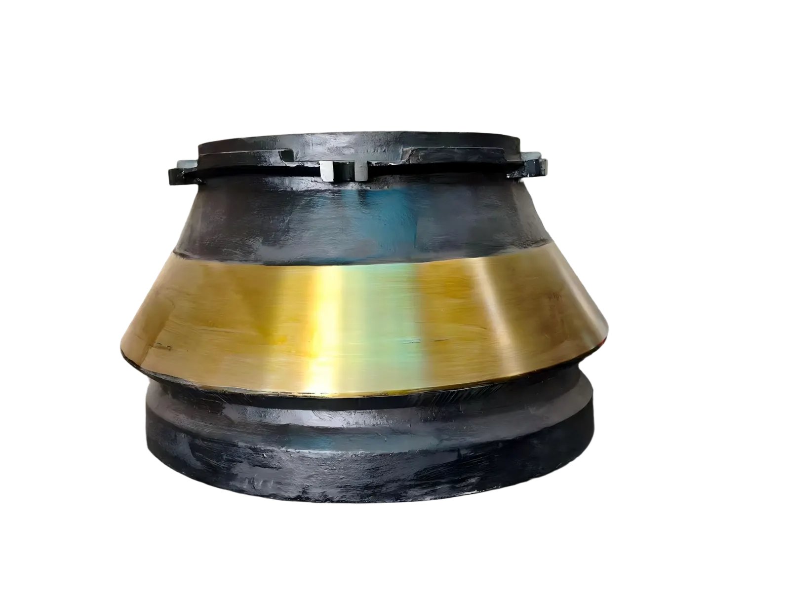
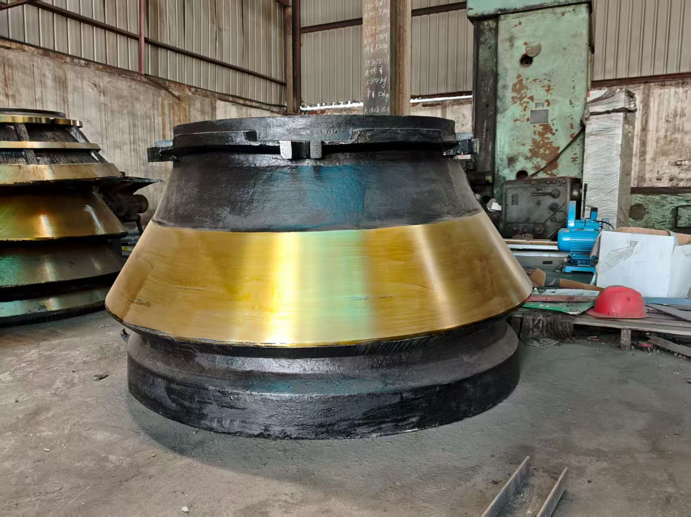

Crushing chamber wear parts
Cone crusher liners directly contact ore and aggregate inside the crushing chamber. The mantle and bowl liner work together to affect capacity, product shape, CSS stability and operating cost.
Wear Parts
Mantles, bowl liners and concaves for secondary, tertiary and fine crushing. Material and chamber profile should be matched to the actual crushing duty, not only to the machine model.

Cone crusher liners directly contact ore and aggregate inside the crushing chamber. The mantle and bowl liner work together to affect capacity, product shape, CSS stability and operating cost.
Material selection depends on abrasiveness, impact load and existing liner life. High-impact duties need toughness, while abrasive duties require strong work-hardening performance.
Compatible references include Metso HP/GP and Sandvik CH/CS style cone crushers. Brand names are used only to identify machine compatibility.
XCT confirms material and chamber profile from feed size, CSS, processed rock, current wear pattern and maintenance cycle. This helps reduce abnormal wear and improve liner utilization.


Typical checks include chemical composition review, hardness where applicable, chamber profile, seating surfaces, dimensions, visual defects and packing photos on request.
MOQ can start from 1 pc. Lead time depends on mold status, weight and material. Heavy liners are packed by pallet or wooden case for export sea freight.
XCT supports OEM/ODM and reverse engineering from drawings, samples, used liner photos and key dimensions.
Metso, Nordberg, Sandvik and other names are used only to identify compatible machines. XCT Mining supplies independent aftermarket replacement parts.
Buyer FAQ
The mantle moves with the head assembly, while the bowl liner or concave forms the fixed crushing surface. The matching profile affects capacity, product shape and liner life.
Send model, chamber type, part number, drawing or photos, material, quantity, destination port or country, current wear life and required delivery date.